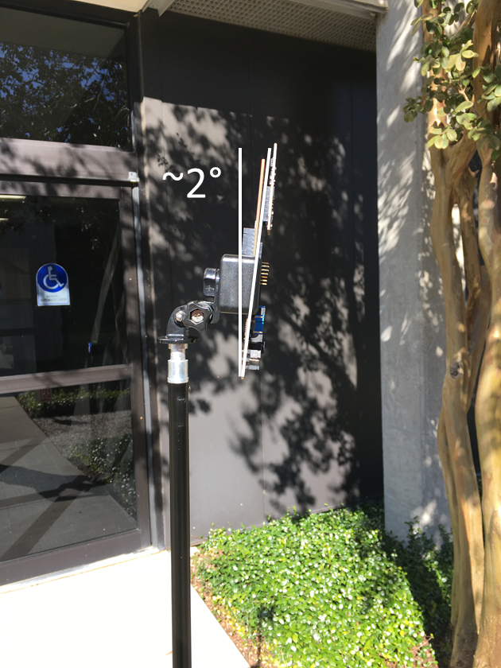

Overview
===========
This lab demonstrates the use of TI mmWave sensors to count and track multiple people simultaneously up to 100m away.
Beamforming and Beamsteering have been implemented on the device to increase the detection range for a person past 100 meters. Every 400 ms, the device completes a scan across a 90 degree field of view, generating tracks for people, vehicles, and other moving objects. Static objects, such as trees, signs, and buildings are ignored. This lab also supports the 50 meter chirp configurations, which provide a 20 Hz update rate (instead of 2.5 Hz with Beamsteering), leading to smoother tracker performance.
<img src="images/overview.gif" width = "600"/>
[[r! IWR6843 ES2.0 Only
This lab is only compatible with ES2.0 version of IWR6843. Check the device version on your IWR6843 using the on-chip device markings as shown below>
1. If line 4 reads `678A`, you have an ES2 device. In this case, this lab is compatible with your EVM.
2. If line 4 reads `60 GHZi`, you have an older ES1 device. In this case, the lab is NOT compatible with your EVM. ES2 IWR6843ISK/IWR6843ISK-ODS boards are orderable from the EVM link above.
<img src="images/iwr6843_silicon_revision.png" width="500"/>
]]
Performance Expectation
=======================
The lab comes with 3 default chirps. These are
* 2D 50 meter - 50 meter range with 20 Hz update rate, good for tracking people - slightly higher detection range compared to 3D
* 3D 50 meter - 50 meter range with 20 Hz update rate and 3 dimensional cartesian data. Good in areas with multiple elevations.
* Tx Beamforming - 100+ meter range with 2.5 Hz update rate. 2 dimensional cartesian data. Good for long range people detection.
You can see a performance comparison in the charts below. The 2D and 3D 50 meter chirps will have very similar performance, but the 2D chirp has more chirps per virual reciever, which leads to the higher measure range values below. The Tx Beamforming chirp uses all 3 Tx in each chirp, so it is limited to 2D. Unlike the 50 meter chirps, the beamforming chirp has much more consistent range across its FOV as the radiation pattern is directed in each direction during the duration of the chirp.
Angle of Arrival (degrees) | 2D Approaching (m) | 3D Approaching (m) | 2D Departing (m) | 3D Departing (m) | Tx Beamforming Approaching | Tx Beamforming Departing |
---------------------------|--------------------|--------------------|------------------|---------------------------------------------------------------------------
0 | 56 | 56 | 56 | 56 | >100 | >100
15 | 55 | 55 | 55 | 56 | >100 | >100
30 | 55 | 44 | 55 | 50 | >100 | >100
45 | 56 | 42 | 55 | 42 | >100 | >100
60 | 34 | 28 | 45 | 34 | NA | NA
[[+d Expand for details of included chirps:
### Default Chirp Parameters 2D 50 m, 3D 50 m, and 2D 100 m.
Chirp Parameter (Units) | 2D 50m | 3D 50 m | Tx Beamforming 100 m
-------------------------|------------|----------|---------
Start Frequency (GHz) | 60.0 |60.0 |61.0
Slope (MHz/us) | 8.241 |8.241 |1.8
Samples per chirp | 125 |125 |256
Chirps per frame | 256 |288 |512
Frame duration (ms) | 100 |100 |400
Sampling rate (Msps) | 3.4330 |3.4330 |2000
Bandwidth (GHz) | 0.300 |0.300 |0.243
Range resolution (m) | 0.49 |0.49 |0.65
Max Unambiguous Range (m)| 60 |60 |150.0
Max Radial Velocity (m/s)| 7.8806 |7.8806 |2.119
Velocity resolution (m/s)| 0.1250 |0.1250 |0.022
Azimuth resolution (deg) | 14.5 |14.5 |29
Number of Rx | 4 |4 |4
Number of Tx | 2 |3 |3
+]]
How Beamforming and Beamsteering Work
=====================================
Normally, the device is run in MIMO mode - one transmitter chirps at a time, and all the Recievers are listening for the return signal. A frame is made up of each transmitter chirping multiple times. When beamforming is implemented, all the recievers are still listening to each chirp. However, all of the transmitter chirp in unison. The transmitted signals constructively interfere and destructively interfere with each other. The good area of constructive interference is a 22.5 degree cone in front of the IWR6843 mmWave device, the rest of the FOV will have less gain or even experiences destructive interference. This 22.5 degree cone has much stronger signal strength, leading to longer range detection. Beamsteering is the process of directing this cone in various directions by manipulating the phase offset of each transmitter. This changes where the constructive and destructive interference happen, leaving the beam pointed in a different direction.
<img src="images/beamsteer.gif" width="500"/>
In the Long Range People Detection demo, four subframes are configured, each one steering the beam in a different direction. These are configured in such way that the beams cumulatively cover the area from -45 degrees to + 45 degrees. For each subframe, the point cloud is generated, then stored. After all four subframes have completed, the point clouds are merged and sent to the tracker. After this process, all of the point cloud and tracking data is output from the device. Each complete scan takes 400 ms.
Please see the document [Beamforming_in_LRPD.pdf](Beamforming_in_LRPD.pdf) to understand how to set the phase offset values to change the beam direction. Also included are two scripts, (phaseShift.py and phaseShift.m) to calculate the beamsteer offset given a intended angle. I recommend reading "Beamforming_in_LRPD.pdf" before using the scripts.
###Using the Scripts to Calculate Phase Offset Value
####phaseShift.py
1. Modify line 3 to have the angles you want to focus the beam at. Default is [-20, 0, 20] - with this input, the script will output 3 phase shift values.
2. Run the script, note the phase shift values. These values are in the same order as the thetas.
3. Replace the phase shift values in the profileCfg lines in the chirp configuration file with the output values. There needs to be 1 profileCfg for each output value.
####phaseShift.m
1. Modify line 1 to be the angle you want to see output for. This script does one angle value at a time.
2. Run the script
3. The output will be a phase shift value which must be placed inside the profileCfg argument inside the chirp config file.
4. Repeat steps 1 through 3 for each beam.
Quickstart
===========
1. Hardware and Software Requirements
-----------
[[r! ICBOOST Required for Beamforming Configurations
The beamforming/beamsteering feature described earlier requires the ICBOOST board to facilitate higher power draw required to use this feature. Using the ISK board standalone will result in poor RF performance. This usually manifests as a noisy point cloud.
When running the lab, please ensure the USB cable is connected to the ICBOOST board, otherwise the ISK may not be powered properly.
]]
### Hardware
Item | Details
--------------------------|-----------------
Device | [Industrial mmWave Carrier Board](http://www.ti.com/tool/MMWAVEICBOOST) and [IWR6843 Long Range Antenna Board](http://www.ti.com/tool/IWR6843ISK).
Mounting Hardware | The EVM needs to be mounted at a height of ~2.0-2.5m with a slight downtilt. An [adjustable clamp style smartphone adapter mount for tripods](https://www.amazon.com/Vastar-Universal-Smartphone-Horizontal-Adjustable/dp/B01L3B5PBI/) and a [60-75" tripod](https://www.amazon.com/Neewer-Portable-centimeters-Camcorder-kilograms/dp/B01N6JCW8F/) can be used to clamp and elevate the EVM. This is only an example solution for mounting; other methods can be used so far as setup specifications are met.
Computer | PC with Windows 10. If a laptop is used, please use the 'High Performance' power plan in Windows.
Micro USB Cable | Due to the high mounting height of the EVM, an 8ft+ cable or USB extension cable is recommended.
Power Supply | 5V, 3A with 2.1-mm barrel jack (center positive). The power supply can be wall adapter style or a battery pack with a USB to barrel jack cable.
### Software
Tool | Version | Required For |Download Link|
----------------------------|---------------------------|---------------|-------------|
mmWave Industrial Toolbox | Latest | Contains all lab material. | [mmWave Industrial Toolbox](http://dev.ti.com/tirex/explore/node?node=AJoMGA2ID9pCPWEKPi16wg__VLyFKFf__LATEST)
Uniflash | Latest | Quickstart Firmware | [Download offline tool](http://www.ti.com/tool/UNIFLASH) or use [cloud version](https://dev.ti.com/uniflash/#!/)
<a name="flash_the_evm"></a>
2. Flash the EVM
-----------
* Follow the instructions for [Hardware Setup of ICB for Flashing Mode](../../../common/docs/hardware_setup/hw_setup_mmwaveicboost_mode_flashing.html)
* Follow the instruction to [Flash the mmWave Device](../../../common/docs/software_setup/using_uniflash_with_mmwave.html)
Image | Location
--------------------------|------------
Meta Image 1/RadarSS | `C:\ti\<mmwave_industrial_toolbox_install_dir>\labs\long_range_people_detection\68xx_long_range_people_det\prebuilt_binaries\long_range_people_det_68xx_demo.bin`
3. Physical Setup
-----------
1. Follow the instructions for [Hardware Setup of ICB for Functional Mode](../../../common/docs/hardware_setup/hw_setup_mmwaveicboost_mode_functional.html)
2. For best results, the EVM should be positioned high enough to be above the top of tracked objects and with a slight down tilt.
The aim is to position the EVM so that the antenna beam can encompass the area of interest.
If the down tilt is too severe, noise from ground clutter would increase and the effective sensing area would decrease.
If threre is no down tilt, counting performance would be worse for cases in which one person is in line with and shielded by another person.
Given the antenna radiation pattern of the EVM, consideration should be taken to not mount the EVM too close or oriented with beam directed to the ceiling as this can increase the noise floor and result in less optimal performance.
<img src="images/downtilt.jpg" width="700"/>
**Setup Requirements:**
* Elevate EVM: 2.0-2.5m high
* Down tilt: ~2-3 degree
**Setup using suggested tripod and smartphone clamp mount:**
1. Screw on clamp mount to tripod
2. Clamp EVM across its width below power barrel jack to attach EVM
3. Adjust tripod head for ~2-3 degree down tilt (Tip: Bubble or level smartphone apps can be used to measure down tilt)
4. Plug in micro-usb and power supply to EVM
5. Extend tripod so that the EVM is elevated 2.0-2.5m from the ground
6. Position EVM and tripod assembly in desired location of room. The EVM should be positioned so that the 120 degree FOV of the EVM antenna encompasses the area of interest and points to the region in which people are expected to enter the space.
<img src="images/EVM_2m.png" width="300"/>

<a name="run_gui_quickstart"></a>
4. Run the Lab
-----------
To run the lab, launch and configure the visualizer which displays the detection and tracked object data received via UART.
The visualizer is found at `<Industrial Toolbox Install Dir>\labs\traffic_monitoring\18xx_68xx_traffic_monitoring\gui`
Follow the directions in the [Traffic Monitoring User's Guide](../../../traffic_monitoring/18xx_68xx_traffic_monitoring/docs/18xx_68xx_traffic_monitoring_users_guide.html#2-launch-the-visualizer)
Ensure that cfg file selected is from this lab at `long_range_people_detection\68xx_long_range_people_det\chirp_configs`
NOTE: The python visualizer in the People Counting directory is currently not compatible with this lab.
Developer's Guide
===========
Build the Firmware from Source Code
-----------
<a name='reqs'></a>
### 1. Software Requirements
Tool | Version | Download Link
----------------------------|---------------------------|--------------
mmWave Industrial Toolbox | Latest | [mmWave Industrial Toolbox](http://dev.ti.com/tirex/explore/node?node=AJoMGA2ID9pCPWEKPi16wg__VLyFKFf__LATEST)
TI mmWave SDK | Latest | [TI mmWave SDK](http://software-dl.ti.com/ra-processors/esd/MMWAVE-SDK/latest/index_FDS.html) and all the related tools are required to be installed as specified in the mmWave SDK release notes
Code Composer Studio | 8.3.0 | [Code Composer Studio v8](http://processors.wiki.ti.com/index.php/Download_CCS#Code_Composer_Studio_Version_8_Downloads)
TI SYS/BIOS | 6.73.01.01 | Included in mmWave SDK installer
TI ARM Compiler | 16.9.6.LTS | Included in mmWave SDK installer
TI CGT Compiler | 8.3.3 | Version 8.3.3 must be downloaded and installed. [Download link](https://www.ti.com/licreg/docs/swlicexportcontrol.tsp?form_type=2&prod_no=ti_cgt_c6000_7.4.16_windows_installer.exe&ref_url=http://software-dl.ti.com/codegen/esd/cgt_registered_sw/C6000/7.4.16)
XDC | 3.50.08.24 | Included in mmWave SDK installer
C64x+ DSPLIB | 3.4.0.0 | Included in mmWave SDK installer
C674x DSPLIB | 3.4.0.0 | Included in mmWave SDK installer
C674x MATHLIB (little-endian, elf/coff format) | 3.1.2.1 | Included in mmWave SDK installer
mmWave Radar Device Support Package | 1.6.1 or later | Upgrade to the latest using CCS update process (see SDK user guide for more details)
TI Emulators Package | 7.0.188.0 or later | Upgrade to the latest using CCS update process (see SDK user guide for more details)
Uniflash | Latest | Uniflash tool is used for flashing TI mmWave Radar devices. [Download offline tool](http://www.ti.com/tool/UNIFLASH) or use the [Cloud version](https://dev.ti.com/uniflash/#!/)
### 2. Import Lab Project
For the People Counting lab, there are two projects, the DSS for the C674x DSP core and the MSS project for the R4F core, that need to be imported to CCS and compiled to generate firmware for the xWR6843.
[[b! Project Workspace
When importing projects to a workspace, a copy is created in the workspace. All modifications will only be implemented for the workspace copy. The original project downloaded in mmWave Industrial Toolbox is not touched.
]]
1. Start CCS and setup workspace as desired.
2. Import the project(s) specified below to CCS. See instructions for importing [here](../../../../docs/readme.html#import-ccs-projects-from-the-mmwave-industrial-toolbox-into-code-composer-studio).
* **long_range_people_det_68xx_mss**
* **long_range_people_det_68xx_dss**
3. Verify that the import occurred without error: in CCS Project Explorer, both **long_range_people_det_68xx_mss** and **long_range_people_det_68xx_dss** should appear.
### 3. Build the Lab
The DSS project must be built before the MSS project.
1. Select the **long_range_people_det_dss** so it is highlighted. Right click on the project and select **Rebuild Project**. The DSS project will build.
2. Select the **long_range_people_det_mss** so it is highlighted. Right click on the project and select **Rebuild Project**. The MSS project will build, the the lab binary will be constructed automatically.
2. On successful build, the following should appear:
* In long_range_people_det_dss → Debug, **long_range_people_det_dss.xe674** (this is the C67x binary used for CCS debug mode)
* In long_range_people_det_mss → Debug, **long_range_people_det_mss.xer4f** (this is the Cortex R4F binary used for CCS debug mode) and **long_range_people_det_lab.bin** (this is the flashable binary used for deployment mode)
{{y Selecting Rebuild instead of Build ensures that the project is always re-compiled. This is especially important in case the previous build failed with errors.}}
[[r! Build Fails with Errors
If the build fails with errors, please ensure that all the software requirements are installed as listed above and in the mmWave SDK release notes.
]]
[[b! Note
As mentioned in the [Quickstart](#quickstart) section, pre-built binary files, both debug and deployment binaries are provided in the pre-compiled directory of the lab.
]]
### 4. Execute the Lab
There are two ways to execute the compiled code on the EVM:
* Deployment mode: the EVM boots autonomously from flash and starts running the bin image
* Using Uniflash, flash the **long_range_people_det_68xx_demo.bin** found at `<PROJECT_WORKSPACE_DIR>\long_range_people_det_68xx_mss\Debug\long_range_people_det_68xx_demo.bin`
* The same procedure for flashing can be use as detailed in the Quickstart [Flash the Device](#flash_the_evm) section.
* Debug mode: Follow the instructions for [Using CCS Debug for Development](../../../common/docs/software_setup/using_ccs_debug.html)
After executing the lab using either method, the lab can be visualized using the [Quick Start GUI](#run_gui_quickstart) or continue to working with the [GUI Source Code](../../../people_counting/visualizer/docs/ba_visualizer_user_guide.html)
Data Formats
-----------
A TLV(type-length-value) encoding scheme is used with little endian byte order. For every frame, a packet is sent consisting of a fixed sized **Frame Header** and then a variable number of TLVs depending on what was detected in that scene. The TLVs can be of types representing the point cloud, target list object, and associated points.
<img src="images/packet_structure.png" width="600"/>
### Frame Header
Size: 52 bytes
```Matlab
frameHeaderStructType = struct(...
'magicWord', {'uint64', 8}, ... % syncPattern in hex is: '02 01 04 03 06 05 08 07'
'version', {'uint32', 4}, ... % Software Version
'platform', {'uint32', 4}, ... % A6843
'timeStamp', {'uint32', 4}, ... % Message create time in cycles
'totalPacketLen', {'uint32', 4}, ... % In bytes, including header
'frameNumber', {'uint32', 4}, ... % Frame Number
'subFrameNumber', {'uint32', 4}, ... % Sub-Frame number
'chirpProcessingMargin', {'uint32', 4}, ... % time left after chirp processing in cycles
'frameProcessingMargin', {'uint32', 4}, ... % time left after frame processing in cycles
'trackingProcessingTime', {'uint32', 4}, ... % time to run tracker
'uartSendingTime', {'uint32', 4}, ... % time to send uart message
'numTLVs' , {'uint16', 2}, ... % Number of TLVs in this frame
'checksum', {'uint16', 2}); % Subframe number.
```**Frame Header Structure in MATLAB syntax for name, type, length**
### TLVs
The TLVs can be of type **DPIF_PointCloudSpherical**, **DPIF_PointCloudSideInfo**, **TARGET_LIST_3D**, or **TARGET_INDEX**.
#### **TLV Header**
Size: 8 bytes
```Matlab
% TLV Type: 06 = DPIF Point cloud spherical, 07 = Target object list, 08 = Target index, 09 = DPIF Point Cloud Side Info
tlvHeaderStruct = struct(...
'type', {'uint32', 4}, ... % TLV object
'length', {'uint32', 4}); % TLV object Length, in bytes, including TLV header
```**TLV header in MATLAB syntax**
Following the header, is the the TLV-type specific payload
#### **Point Cloud TLV**
Type: DPIF_POINT_CLOUD_SPHERICAL
Size: sizeof (DPIF_PointCloudSpherical) x numberOfPoints
<img src="images/tlv_pointcloud_structure.png" width="250"/>
Each Point Cloud TLV consists of an array of points. Each point is defined in 16 bytes.
```java
DPIF_PointCloudSpherical = struct(...
'range', {'float', 4}, ... % Range, in m
'azimuth', {'float', 4}, ... % Azimuth angle, in rad
'elevation', {'float', 4}, ... % Elevation angle, in rad
'doppler' {'float', 4}, ... % Doppler, in m/s
```**Point Structure in MATLAB syntax**
#### **Point Cloud Side Info TLV**
Type: DPIF_POINT_CLOUD_SIDE_INFO
Size: sizeof(DPIF_PointCloudSideInfo) x numberOfPoints
<img src="images/tlv_pointcloud_structure.png" width="250"/>
Each Point Cloud Side Info TLV consists of an array of point side info data. Each is 8 bytes.
```java
DPIF_PointCloudSideInfo = struct(...
'snr', {'int16_t', 2}, ... % SNR, ratio
'noise' {'int16_t', 2}, ... % Noise
```**Point Side Info Structure in MATLAB syntax**
#### **Target Object TLV**
Type: TARGET_LIST_3D
Size: sizeof (targetStruct3D) x numberOfTargets
<img src="images/tlv_target_structure.png" width="250"/>
Each Target List TLV consists of an array of targets. Each target is defined as below:
```java
targetStruct3D = struct(...
'tid', {'uint32', 4}, ... % Track ID
'posX', {'float', 4}, ... % Target position in X dimension, m
'posY', {'float', 4}, ... % Target position in Y dimension, m
'posZ', {'float', 4}, ... % Target position in Z dimension, m
'velX', {'float', 4}, ... % Target velocity in X dimension, m/s
'velY', {'float', 4}, ... % Target velocity in Y dimension, m/s
'velZ', {'float', 4}, ... % Target velocity in Z dimension, m/s
'accX', {'float', 4}, ... % Target acceleration in X dimension, m/s2
'accY', {'float', 4}, ... % Target acceleration in Y dimension, m/s
'accZ', {'float', 4}, ... % Target acceleration in Z dimension, m/s
'ec[16]', {'float', 16x4}, ... % Tracking error covariance matrix, [4x4] in range/azimuth/elevation/doppler coordinates
'g', {'float', 4}, ... % Gating function gain
'confidenceLevel' {'float', 4}, ... % Confidence Level
```**Target Structure in MATLAB syntax**
#### **Target Index TLV**
Type: TARGET_INDEX
Size: numberOfPoints
<img src="images/tlv_targetid_structure.png" width="250"/>
Each Target List TLV consists of an array of target IDs. A targetID at index ***i*** is the target to which point ***i*** of the frame's point cloud was associated.
Valid IDs range from 0-249.
```java
targetIndex = struct(...
'targetID', {'uint8', 1}); % Track ID
```**Target ID Structure in MATLAB syntax**
Other Target ID values:
Value | Meaning
------------|-----------
253 | Point not associated, SNR too weak
254 | Point not associated, located outside boundary of interest
255 | Point not associated, considered as noise
Customization
-----------
* Please refer to the **People Counting Demo Customization Guide** which can be found at `C:\ti\<mmwave_industrial_toolbox_install_dir>\labs\long_range_people_detection\68xx_long_range_people_det\docs\pplcount_customization_guide.pdf`
Need More Help?
===========
* Find answers to common questions on <a href="https://e2e.ti.com/support/sensor/mmwave_sensors/w/wiki" target="_blank">mmWave E2E FAQ</a>
* Search for your issue or post a new question on the <a href="https://e2e.ti.com/support/sensor/mmwave_sensors/f/1023" target="_blank">mmWave E2E forum</a>